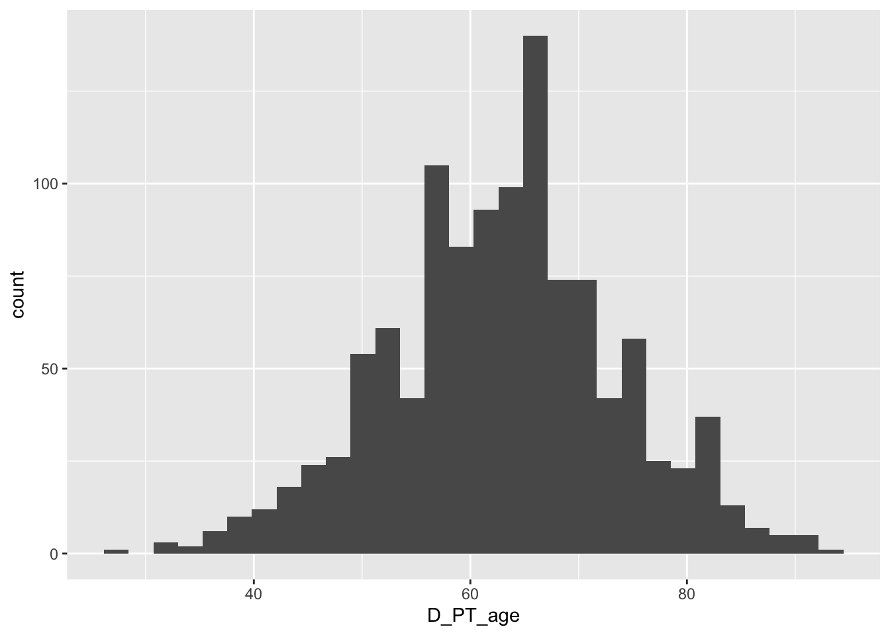
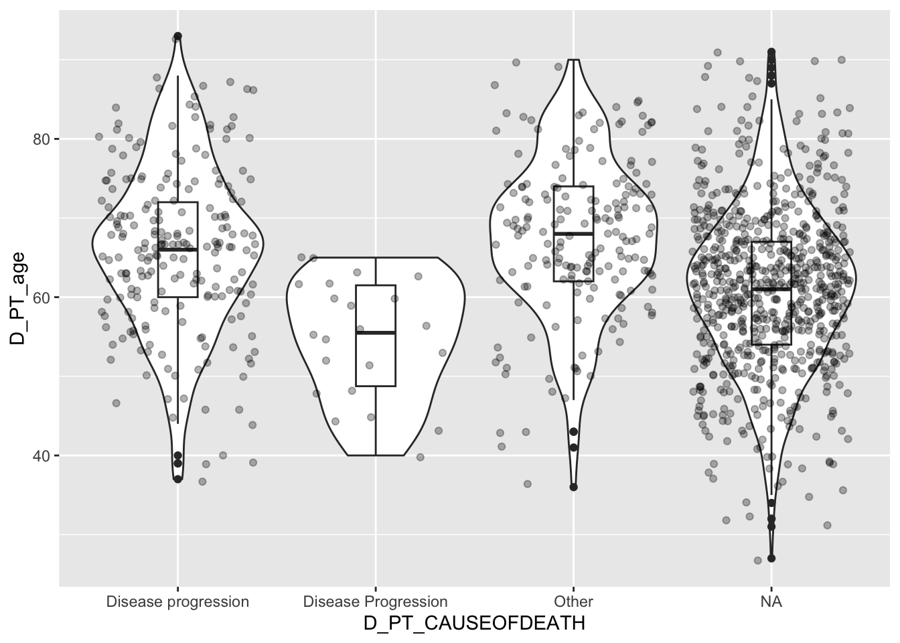
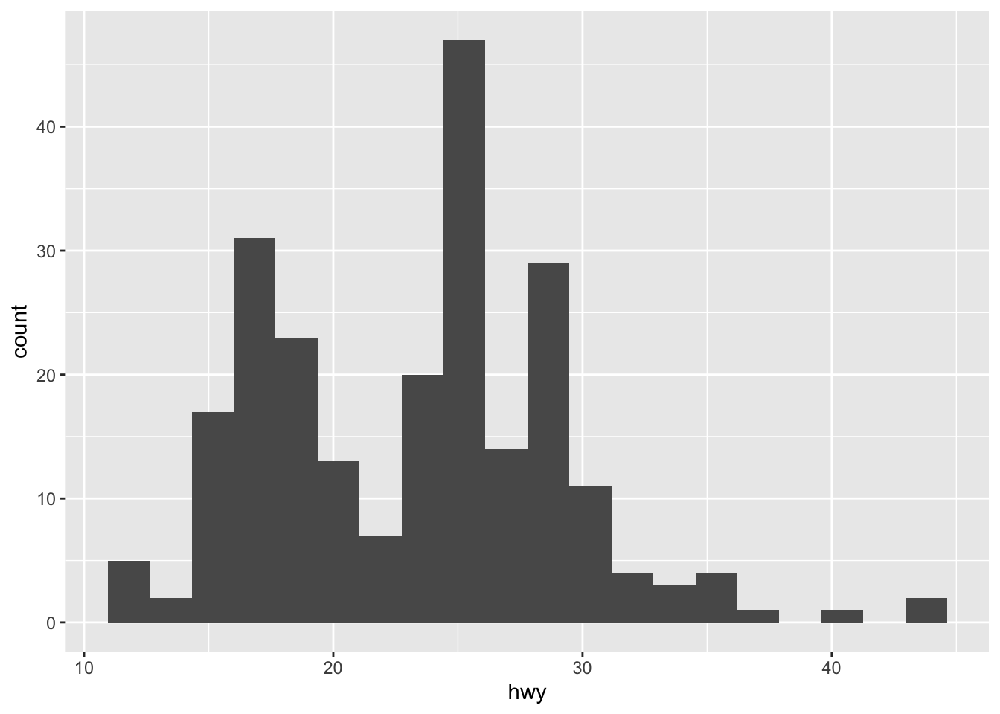
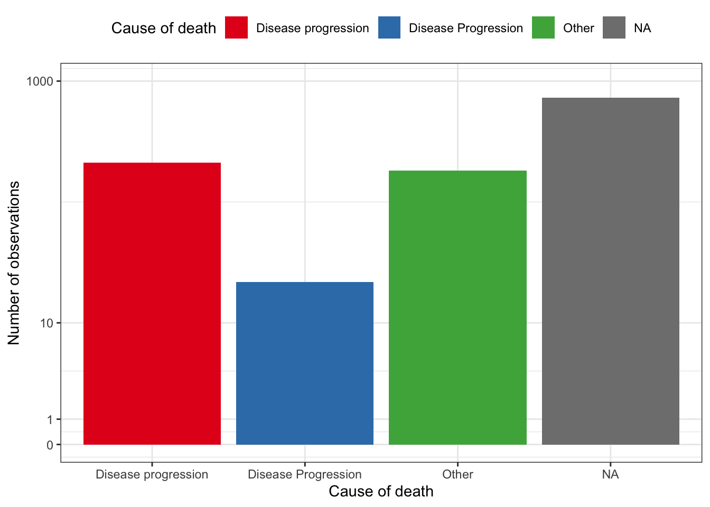
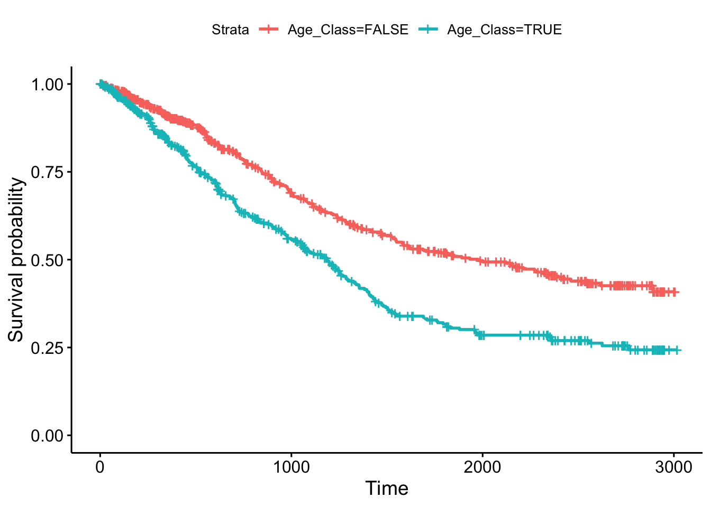
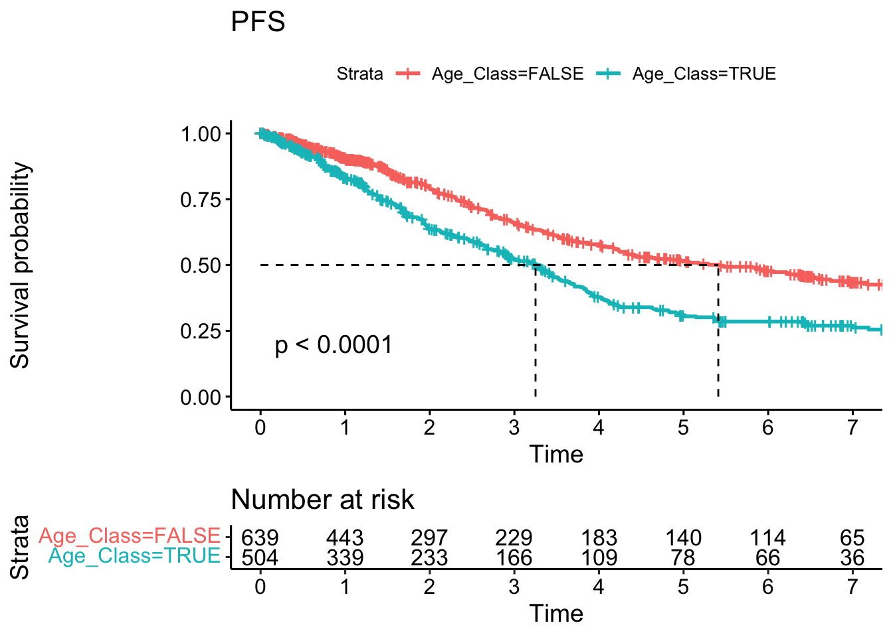

Chapter 3 Getting familiar with the MMRF CoMMpass datasets in R
This codebook will rely on data from the MMRF CoMMpass data. Register as a researcher and download the following data from release IA21 https://research.themmrf.org/ in a directory named MMRF_IA21.
CoMMpass_IA21_FlatFile_Dictionaries.tar.gz # decompress this folder
CoMMpass_IA21_FlatFiles.tar.gz # decompress3.1 Setup a working directory
At this point, we assume you have a directory named MMRF_IA21 on your computer, which contains the analysis from TGEN’s Phoenix pipeline (https://github.com/tgen/phoenix/). We will explore the available clinical annotation for samples and patients.
If the output of the above command is an error, you may not be working from the expected directory. You can fix that by changing your working directory with the getwd and setwd pair of commands, or manually specify the path to “MMRF_IA21” files in the next lines of code.
# un-comment (remove # sign) and adjust the following line with your own working directory
# setwd("~/Documents/MyProject")
getwd()## [1] "/Users/jean-baptiste/Dropbox (Partners HealthCare)/2_Projects/MM_R_Codebook"3.2 Explore data with the R tidyverse
Tables from the MMRF database are usually in the tab-separated values format and can be read with the read.table (base R) or read_tsv function (tidyverse). In this codebook, we chose to use the tidyverse packages.
## Rows: 1143 Columns: 91
## ── Column specification ────────────────────────────────────────────────────────
## Delimiter: "\t"
## chr (27): PUBLIC_ID, D_PT_DIDPATIENTCOM, D_PT_PRIMARYREASON, D_PT_CAUSEOFDEA...
## dbl (63): D_PT_ic_day, D_PT_deathdy, D_PT_lastdy, D_PT_complete, D_PT_discon...
## lgl (1): DEMOG_NATIVEHAWAIIA
##
## ℹ Use `spec()` to retrieve the full column specification for this data.
## ℹ Specify the column types or set `show_col_types = FALSE` to quiet this message.Use the combinations of functions ncol, nrow, dim, class, etc. to explore the dataset:
nrow(mmrf) # number of rows
ncol(mmrf) # number of columns
sapply(mmrf, class) # for each column of mmrf (sapply function), report the class of the variable (class function) ()
colnames(mmrf) # get column namesUse basic R functions to extract information from the columns:
## extract variables
# variables can be extracted with the $ sign and a direct reference to the column name:
head(mmrf$PUBLIC_ID) # first values
tail(mmrf$PUBLIC_ID) # last values
mmrf$PUBLIC_ID # all values
mmrf[["PUBLIC_ID"]] # specify column as a variable itself (can replace "PUBLIC_ID" with a variable pointing to "PUBLIC_ID")
## subset parts of the table
mmrf[1:5, 1:4] # this extracts the first 5 rows and 4 variables
mmrf[1:5, c("PUBLIC_ID", "D_PT_deathdy")] # this extracts the first 5 values for variables PUBLIC_ID and D_PT_deathdyNumeric variables can also be treated with standard R functions
mmrf$D_PT_age # what are the values for age
summary(mmrf$D_PT_age) # what are range; quantiles; and summary values
quantile(mmrf$D_PT_age, probs = c(.025, .975)) # check for quantiles of interest
sum(is.na(mmrf$D_PT_age)) # is there any NA values?
mean(mmrf$D_PT_age) # compute the mean. mean(mmrf$D_PT_age, na.rm=TRUE) would ignore NA values when computing the meanOther useful functions include: median, sd, min, max, …
Character and categorical variables should also be checked for possible values and inconsistencies:
table(mmrf$D_PT_race, useNA = "ifany") # what are affected values for a given variable (and their number of occurences)
any(duplicated(mmrf$PUBLIC_ID)) # is there any duplicated values
mmrf$PUBLIC_ID[duplicated(mmrf$PUBLIC_ID)] # if there was any duplicated values
length(unique(mmrf$PUBLIC_ID)) # how many uniques values are in the table for this variable
sort(mmrf$PUBLIC_ID) # return values in an alphabetical orderAnother grammar can be used in R and will become more powerful with tidyverse functions. Using |> , (or, almost equivalent, %>%),first arguments of functions (on the right of the |>) will be fed with the output of the previous element (on the left of the |>), almost like database query languages and grammar. This will facilitate applying list of functions to a single data table.
For example, to list and count the causes of death in the mmrf table, we could use:
## # A tibble: 4 × 2
## # Groups: D_PT_CAUSEOFDEATH [4]
## D_PT_CAUSEOFDEATH n
## <chr> <int>
## 1 Disease Progression 22
## 2 Disease progression 213
## 3 Other 182
## 4 <NA> 726It is also easy to assign the output of a chain of instructions to a new variable: Here group_by will force the next layer to be applied to each unique combination of the categorical values specify in the grouping arguments:
## # A tibble: 1 × 1
## n
## <int>
## 1 1143## # A tibble: 4 × 2
## # Groups: D_PT_CAUSEOFDEATH [4]
## D_PT_CAUSEOFDEATH n
## <chr> <int>
## 1 Disease Progression 22
## 2 Disease progression 213
## 3 Other 182
## 4 <NA> 726stats.age <- mmrf |>
group_by(D_PT_race, D_PT_gender) |>
summarise(median_age=median(D_PT_age), min_age=min(D_PT_age), max_age=max(D_PT_age)) |> # summarize to flatten the dataframe
mutate(range=max_age-min_age) |> # mutate to define a new column
mutate(text=str_c("median=", median_age,"\n", "(", max_age, "-", min_age, ")"))## `summarise()` has grouped output by 'D_PT_race'. You can override using the
## `.groups` argument.## # A tibble: 11 × 7
## # Groups: D_PT_race [6]
## D_PT_race D_PT_gender median_age min_age max_age range text
## <dbl> <dbl> <dbl> <dbl> <dbl> <dbl> <chr>
## 1 1 1 65 27 93 66 "median=65\n(93-27)"
## 2 1 2 66 36 91 55 "median=66\n(91-36)"
## 3 2 1 65 32 87 55 "median=65\n(87-32)"
## 4 2 2 61 34 90 56 "median=61\n(90-34)"
## 5 3 2 53 53 53 0 "median=53\n(53-53)"
## 6 4 1 59 46 72 26 "median=59\n(72-46)"
## 7 4 2 63 42 71 29 "median=63\n(71-42)"
## 8 6 1 62.5 39 79 40 "median=62.5\n(79-39)"
## 9 6 2 64 50 74 24 "median=64\n(74-50)"
## 10 NA 1 58 38 65 27 "median=58\n(65-38)"
## 11 NA 2 58 38 66 28 "median=58\n(66-38)"Most useful functions include select (to select variables), filter (to select rows, or observations), mutate (to define new variables), and summarize to compute summary statistics. More complete descriptions are available in the cheat sheets provided by Rstudio: https://rstudio.github.io/cheatsheets/tidyr.pdf and https://rstudio.github.io/cheatsheets/data-transformation.pdf
mmrf |>
filter(D_PT_age >= 45 & D_PT_race==1) |>
group_by(D_PT_gender) |>
summarise(median_age=median(D_PT_age))## # A tibble: 2 × 2
## D_PT_gender median_age
## <dbl> <dbl>
## 1 1 65
## 2 2 663.3 Represent data with ggplot2
The ggplot2 package is a commonly used library which provides functions to visually represent data sets. Rstudio provides a very useful cheat sheet for ggplot2 function. https://rstudio.github.io/cheatsheets/data-visualization.pdf
The grammar for ggplot2 is generally (1) ggplot() call to specify a data frame to work with, then (2) aes() calls to specify the variables used in axes and layers, and (3) graphical layers separated by a + sign.
#install.packages("RColorBrewer") if needed
library(RColorBrewer)
library(ggplot2)
ggplot(mmrf, aes(D_PT_age)) +
geom_histogram()## `stat_bin()` using `bins = 30`. Pick better value with `binwidth`.
# ggplot(mmrf, aes(D_PT_age)) +
# geom_violin()
ggplot(mmrf, aes(D_PT_CAUSEOFDEATH, D_PT_age)) +
geom_violin() +
geom_boxplot(width=0.2) +
geom_jitter(alpha=0.3)
# represent the information
ggplot(death.causes, aes(x = D_PT_CAUSEOFDEATH, y = n)) +
geom_bar(stat="identity")
In the above function call, death.causes represents a data frame, D_PT_CAUSEOFDEATH and n map x and y axes to column names (variables) of the data frame, while the geom_bar following the + sign specifies graphical layers of figure. We could change axis, theme, colors…
ggplot(death.causes, aes(x = D_PT_CAUSEOFDEATH, y = n, fill=D_PT_CAUSEOFDEATH)) +
# figure layer
geom_bar(stat="identity") +
# axis layer
scale_y_continuous(trans="pseudo_log", limits=c(NA, 1000), breaks=c(0, 1, 10, 1000)) +
scale_fill_manual(values=brewer.pal(n=4, "Set1")) +
# axis labels
labs(x="Cause of death", y="Number of observations", fill="Cause of death") +
# graphical settings (independent of the data values)
theme_bw() +
theme(legend.position="top")
3.4 Merge information across tables
In our scenario, we would like to add the survival data for each patient with is saved in another table (MMRF_CoMMpass_IA21_STAND_ALONE_SURVIVAL.tsv). Luckily, patients from both tables can be matched by their PUBLIC_ID key value.
mmrf.survival <- read_tsv("MMRF_IA21/CoMMpass_IA21_FlatFiles/MMRF_CoMMpass_IA21_STAND_ALONE_SURVIVAL.tsv")## Rows: 1143 Columns: 226
## ── Column specification ────────────────────────────────────────────────────────
## Delimiter: "\t"
## chr (1): PUBLIC_ID
## dbl (217): deathdy, lstalive, lvisitdy, maxline, linesdy1, linesdy2, linesdy...
## lgl (8): trtstdy, fltendy, pfsendy, osendy, frendy, ttfendy, t2lendy, t3lendy
##
## ℹ Use `spec()` to retrieve the full column specification for this data.
## ℹ Specify the column types or set `show_col_types = FALSE` to quiet this message.# keep only useful variables for this particular analysis
mmrf.survival <- mmrf.survival |>
select(PUBLIC_ID, ttcpfs1, censpfs1, ttcos, censos)Basic data quality checks should be performed again
head(mmrf.survival)
sapply(mmrf.survival, class)
sapply(mmrf.survival, summary)
table(is.na(mmrf.survival$ttcpfs1))
table(mmrf$PUBLIC_ID %in% mmrf.survival$PUBLIC_ID) # how many of mmrf's public ID also have survival data
all(sort(mmrf$PUBLIC_ID) == sort(mmrf.survival$PUBLIC_ID)) # are IDs perfectly matching, etcData tables can be combined based on unique key identifiers that match across tables, in operations that are called joins (https://en.wikipedia.org/wiki/Join_(SQL)). Here, we want to study only IDs which are found in both the sociodemographics table, and the survival table, we will use an inner_join. Because each table has only 1 row per unique PUBLIC_ID value, the joint table will also have only 1 row per patient.
mmrf.socio.survival <- inner_join(mmrf, mmrf.survival, by = c("PUBLIC_ID"="PUBLIC_ID"))
# DO NOT use bind_rows/cols to combine information from the same observation KEY IDs across tables
# bind_rows(head(mmrf), head(mmrf.survival)) |> View() # this may miss matching information
# bind_cols(head(mmrf[,1:5]), head(mmrf.survival |> arrange(PUBLIC_ID))) |> View() # this may assign wrong values to patients if they are not exactly in the same order
mmrf.socio.survival[1:5, c("PUBLIC_ID", "censos")]## # A tibble: 5 × 2
## PUBLIC_ID censos
## <chr> <dbl>
## 1 MMRF_1014 0
## 2 MMRF_1017 1
## 3 MMRF_1024 0
## 4 MMRF_1038 1
## 5 MMRF_1033 03.5 Survival analysis and Cox regression
Survival analysis are usually performed with the survival R package. In order to produce Kaplan-Meier graphs, we can leverage the survminer library which wraps ggplot2 and adds extremely useful functions for figures in survival analysis.
Similar to linear (lm(y~x, data=df)) and logistic regressions, (glm(outcome~x, data=df, family=binomial), Cox proportional hazard models are fitted with a R formula:
## Loading required package: ggpubr##
## Attaching package: 'survminer'## The following object is masked from 'package:survival':
##
## myeloma# create an Age_Class variable that separates patients under 65 years old
mmrf.socio.survival <- mmrf.socio.survival |>
mutate(Age_Class = D_PT_age >= 65)
# model the PFS1 based on that age category
coxph( Surv(ttcpfs1, censpfs1) ~ Age_Class, data = mmrf.socio.survival )## Call:
## coxph(formula = Surv(ttcpfs1, censpfs1) ~ Age_Class, data = mmrf.socio.survival)
##
## coef exp(coef) se(coef) z p
## Age_ClassTRUE 0.52148 1.68453 0.09215 5.659 1.52e-08
##
## Likelihood ratio test=32.25 on 1 df, p=1.356e-08
## n= 1143, number of events= 478Cox models can be saved into regular R variables (obj <- coxph(...)), and base R functions such as summary also apply to these in order to extract model estimates, confidence intervals around the estimates, and p-values for the desired statistical test.
mmrf.pfs1 <- coxph( Surv(ttcpfs1, censpfs1) ~ Age_Class, data = mmrf.socio.survival )
# model estimates and p values
summary( mmrf.pfs1 )## Call:
## coxph(formula = Surv(ttcpfs1, censpfs1) ~ Age_Class, data = mmrf.socio.survival)
##
## n= 1143, number of events= 478
##
## coef exp(coef) se(coef) z Pr(>|z|)
## Age_ClassTRUE 0.52148 1.68453 0.09215 5.659 1.52e-08 ***
## ---
## Signif. codes: 0 '***' 0.001 '**' 0.01 '*' 0.05 '.' 0.1 ' ' 1
##
## exp(coef) exp(-coef) lower .95 upper .95
## Age_ClassTRUE 1.685 0.5936 1.406 2.018
##
## Concordance= 0.569 (se = 0.012 )
## Likelihood ratio test= 32.25 on 1 df, p=1e-08
## Wald test = 32.03 on 1 df, p=2e-08
## Score (logrank) test = 32.75 on 1 df, p=1e-08## 2.5 % 97.5 %
## Age_ClassTRUE 1.406178 2.017973.6 Kaplan-Meier curves from survival data
The survminer conveniently offers a Kaplan-Meier curve function wrapped around ggplot2. Luckily, and as usual with commonly used functions, we do not need to code these from scratch with basic ggplot2 layers.
# Basic survival curves
mmrf.pfs1.survfit <- survfit(Surv(ttcpfs1, censpfs1) ~ Age_Class, data = mmrf.socio.survival)
ggsurvplot(mmrf.pfs1.survfit, data = mmrf.socio.survival)
The ggsurvplot function has many arguments (try help(ggsurvplot) or ?ggsurvplot) that we can leverage to display more information on the figure, to transform the time axis unit from days to year:
survplot.pfs <- ggsurvplot(mmrf.pfs1.survfit,
data=mmrf.socio.survival,
title="PFS",
pval = TRUE,
risk.table = TRUE,
surv.median.line = "hv",
xscale="d_y",
break.x.by=365.25,
xlim=c(0, 7*365.25))
survplot.pfs
To save these composite ggplot2 objects into pdf files, you can use the:
## quartz_off_screen
## 2In general, simple ggplot2 figures can be written to png/pdf/etc. files with the ggsave function.
Finally, tables can be saved with the write_ set of functions: